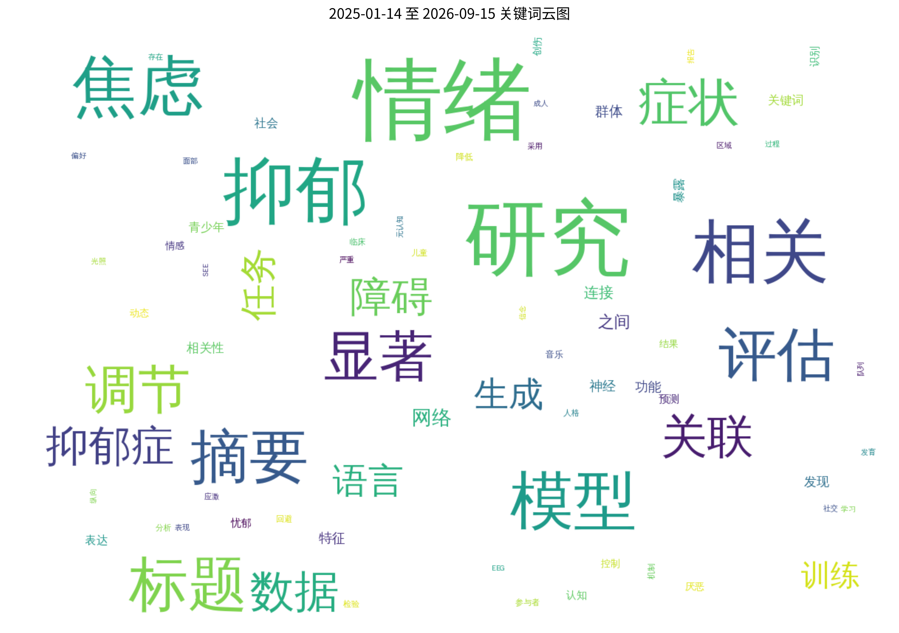
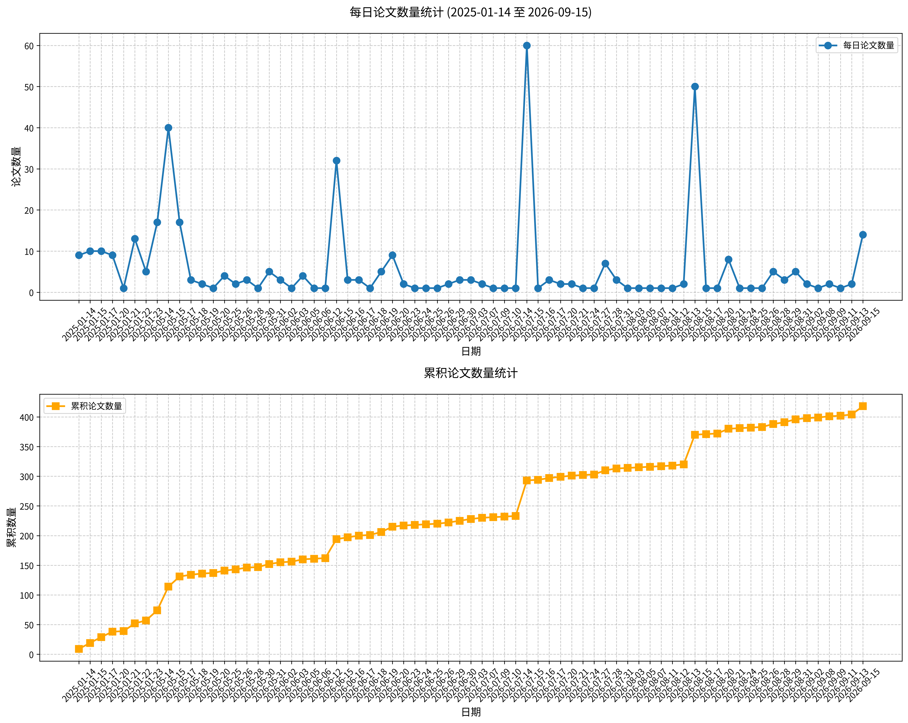

原文标题： Psychological Impact of BRCA Genetic Testing: Analysis of Positive and Negative Affect Changes according to Test Results.
摘要： 目的：BRCA1/2基因检测可能引发超越简单宽慰或痛苦层面的复杂情绪反应。本研究考察了检测前后情感的变化，并使用正性情感与负性情感量表（PANAS）的总体及分维度得分，识别了与这些反应相关的人口学、临床及家族因素。 方法：2018年至2025年间共纳入640名接受BRCA1/2检测的个体；其中392人具有完整的检测前后PANAS数据。根据检测结果（阳性与阴性/意义未明变异[VUS]）、年龄、绝经状态、个人癌症史和家族癌症史，对情感变化进行了建模。分维度分析探讨了具体情绪。 结果：观察到不同的情感模式。在41至60岁人群中，BRCA阴性/VUS参与者的正性情感下降，而BRCA阳性个体的负性情感上升。接受阴性/VUS结果的绝经后女性和有癌症史的参与者表现出正性情感降低。相比之下，有癌症史的BRCA阳性个体在正性和负性情感上均表现出升高。无家族癌症史与阴性/VUS结果后正性情感降低相关。分维度分析显示，阴性/VUS参与者的自信感减弱、内疚感增强，而BRCA阳性个体的恐惧、敌意、内疚和痛苦均有所升高。 结论：BRCA检测引发由检测结果、癌症史、人口学及家族因素共同塑造的异质性情绪反应。分维度分析揭示了对具体情绪的细致变化，如非携带者自信感下降及携带者恐惧和内疚感升高，强调了个性化、文化适配的遗传咨询的必要性，同时需认识到这些发现反映的是短期情感反应及结果相关的不确定性。
关键词： BRCA基因检测；情感变化；正性情感与负性情感量表；心理影响；遗传咨询
论文链接： PubMed
原文标题： Patterns of Lateral Frontal Delta Asymmetry in Adult Attention-deficit/Hyperactivity Disorder with Comorbid Depression: A Quantitative Electroencephalography Study.
摘要： 目的：注意缺陷/多动障碍常持续至成年期，且常与抑郁共病，使诊断和治疗复杂化。定量脑电图可能通过识别神经生理学标志物，有助于区分单纯ADHD与伴发抑郁的ADHD。方法：这项回顾性研究纳入45名成人ADHD患者，其中24名伴发抑郁，21名无抑郁共病。诊断通过基于《精神障碍诊断与统计手册（第五版）》的结构化访谈和神经心理测试确认。在闭眼条件下使用19个电极记录静息态脑电图。数据经过伪迹剔除和独立成分分析，并计算delta、theta、alpha、beta、高beta和gamma频带的频谱功率。采用秩次协方差分析对额叶区域及不对称指数（Fp2-Fp1、F4-F3和F8-F7）进行分析，并校正年龄、性别、全量表智商和当前用药状态。结果：两组人口学因素无显著差异。然而，单纯ADHD组在外侧额叶区域（F8-F7）的delta波不对称性与共病组存在差异（p = 0.024）。其他发现包括：单纯ADHD组在F8位点表现出较高的绝对delta功率趋势（p = 0.060），而共病组表现出更大的左侧中央颞区delta功率模式（p = 0.051）。结论：在这项初步研究中，伴发与不伴发抑郁共病的成人ADHD患者表现出不同的额叶delta波不对称性模式，提示抑郁共病可能与qEEG特征的变异性相关。未来需要更大样本、纵向研究来确定qEEG作为ADHD辅助工具的临床效用。
关键词： 注意缺陷/多动障碍；抑郁共病；定量脑电图；额叶不对称性；Delta波
论文链接： PubMed
原文标题： Comparisons of Virtual Reality-based vs. Conventional Biofeedback for Panic Symptoms: A Randomized Controlled Study.
摘要： 目的：虚拟现实（VR）生物反馈（BF）正在被研究为精神病学领域的一种新型治疗方法。我们探讨了基于VR的生物反馈对惊恐症状的潜在作用。方法：在患者健康问卷-9（PHQ-9）得分≥10或惊恐障碍严重度量表（PDSS）得分≥9的参与者被归为抑郁或焦虑症状（DAS）组，并随机分配到两个干预组：基于VR的生物反馈组（DAS/VR组）和由治疗师指导的常规生物反馈组（DAS/BF组）。不符合标准者被归为健康对照组，并接受VR生物反馈干预（VR组）。干预在一个月内共进行三次。共分析116名参与者。结果：DAS/VR组和DAS/BF组的PDSS得分均显著下降，表明两种干预均能显著降低DAS个体的惊恐症状。DAS/VR组PDSS总分平均减少1.51（标准差[SD]=2.28），DAS/BF组平均减少1.11（SD=2.31）。然而，在基线至治疗4周期间，广场恐惧性恐惧与回避（p=0.003）、惊恐发作及有限症状发作（p=0.002）以及惊恐对社交活动的干扰（p=0.008）仅在VR生物反馈组中显著下降，而常规生物反馈组未显示显著变化。两种疗法均改善了惊恐发作的严重程度及惊恐对工作的干扰。结论：VR生物反馈能有效降低惊恐症状。值得注意的是，它在减少广场恐惧性恐惧与回避方面表现出显著效果，而常规生物反馈未显现此效果。
关键词： 虚拟现实；生物反馈；惊恐症状；广场恐惧；焦虑干预
论文链接： PubMed
原文标题： Predictors of Somatic Symptom Severity in Adult Psychiatric Outpatients: A Cross-sectional Heart Rate Variability and Quantitative Electroencephalography Study.
摘要： 目的：探讨临床、自主神经和神经生理学变量对成人重度抑郁障碍（MDD）或注意缺陷/多动障碍（ADHD）患者躯体症状严重程度的相对贡献。 方法：我们分析了103例门诊患者（MDD=55例；ADHD=48例）的数据，这些患者完成了定量脑电图（QEEG）、心率变异性（HRV）及问卷评估（患者健康问卷-15、贝克抑郁量表-II、匹兹堡睡眠质量指数、韩国成人ADHD评定量表）。分层回归模型依次纳入人口学变量、临床症状、HRV总功率和QEEGβ波段相干性。 结果：最终模型解释了49.4%的方差（校正R²=0.421，p<0.001）。临床变量产生的增量最大（ΔR²=0.232，p<0.001），其中睡眠障碍是最强预测因子（β=0.359，p<0.001），其次是女性性别（β=0.256，p=0.004）和抑郁症状（β=0.207，p=0.031）。较低的HRV总功率与更严重的躯体症状显著相关（ΔR²=0.026，p=0.034；β=-0.194，p=0.020）。QEEGβ波段相干性降低增加了解释力（ΔR²=0.076，p=0.048），特别是右侧额-额连接（β=-0.259，p=0.031）和左侧额-顶连接（β=-0.245，p=0.052）。主要诊断（MDD vs. ADHD）无预测作用（p=0.124）。 结论：睡眠障碍与躯体症状的关联最强，其次是女性性别和抑郁症状。分类诊断的有限作用支持维度化框架。自主神经灵活性降低和皮层连接中断可能是躯体困扰的基础，需通过纵向研究加以证实。
关键词： 躯体症状；心率变异性；定量脑电图；睡眠障碍；抑郁
论文链接： PubMed
原文标题： Multimodal analysis of spontaneous speech for predicting food liking: Integrating linguistic and prosodic features with machine learning.
摘要： 自发语音为理解消费者在食物评价过程中的情绪体验提供了一个有前景但尚未充分探索的窗口。与传统自我报告测量不同，语音表达能够同时捕捉显性的语言内容和隐性的情感线索，可能为享乐感知提供更丰富的描述。本研究探讨自然口语回应中嵌入的语言学和韵律线索是否能预测产品喜好。九十名参与者评价了三种巧克力和三种植物基饮料，并提供享乐评分和开放式口头描述。语音分析采用心理语言学、韵律和基于表征的特征。多种机器学习算法被应用于分类（低/中 vs 高喜好）和回归（连续喜好预测）。特征层面比较显示，巧克力比植物基饮料引发了更丰富的情绪语言、更高的声音强度和更大的声学变异性（p < 0.005）。在完整数据集中，语言学标记是喜好的最强预测因子（F1分数 = 0.695；平均绝对误差（MAE） = 1.530），而韵律特征提供了与唤醒度和投入度相关的补充信息。语音嵌入的泛化能力有限（曲线下面积（AUC） < 0.518；MAE > 1.602）。产品特定分析显示巧克力（F1分数 = 0.825；MAE = 1.213）的预测准确性高于植物基饮料（F1分数 = 0.559；MAE = 1.619），表明语音中情感线索的强度取决于被评价产品的情感共鸣程度。这些发现表明，自发语音包含与食物喜好相关的可测量的情绪信号。可解释的语言学和韵律特征能够部分预测享乐反应，凸显了基于语音的多模态情绪分析作为感官和消费者研究中补充工具的潜力。
关键词： 自发语音；情绪分析；多模态机器学习；食物喜好预测；韵律特征
论文链接： PubMed

